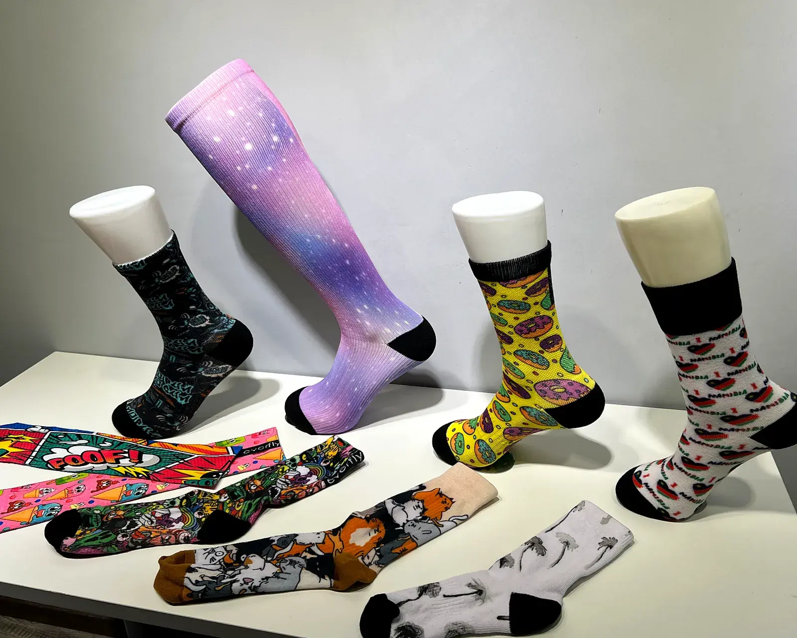
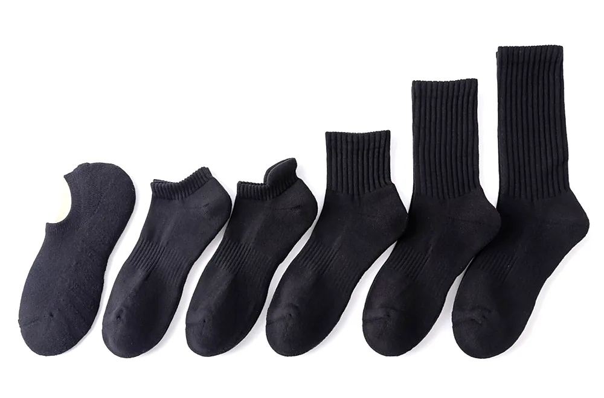
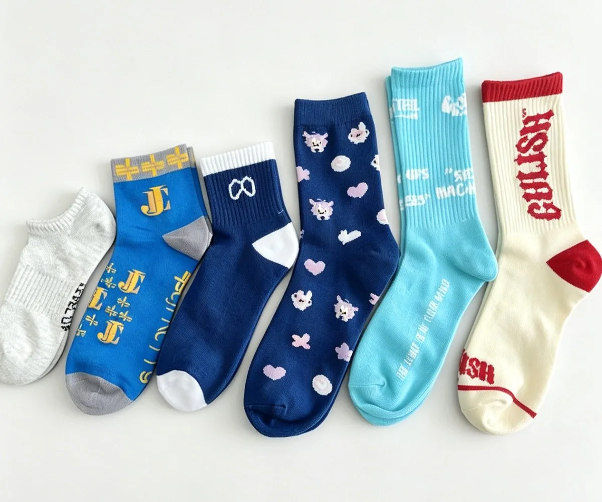
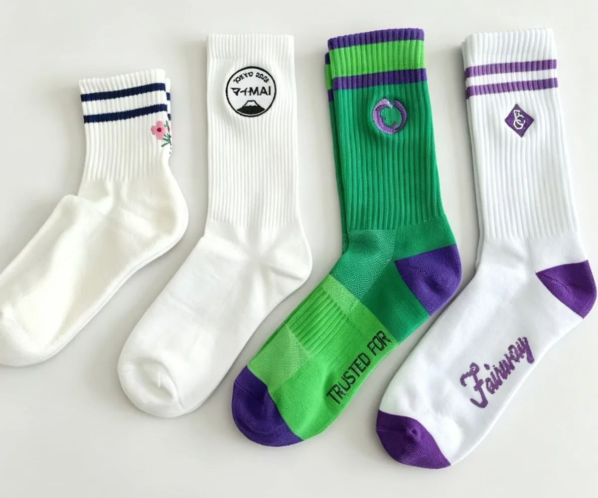
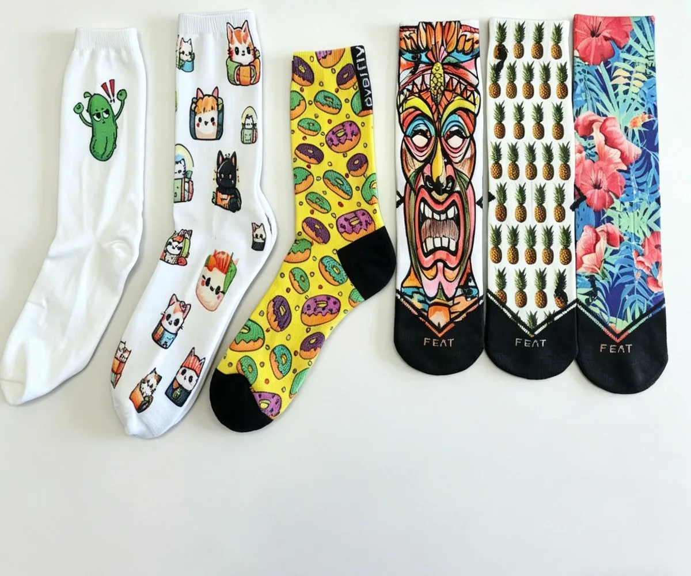
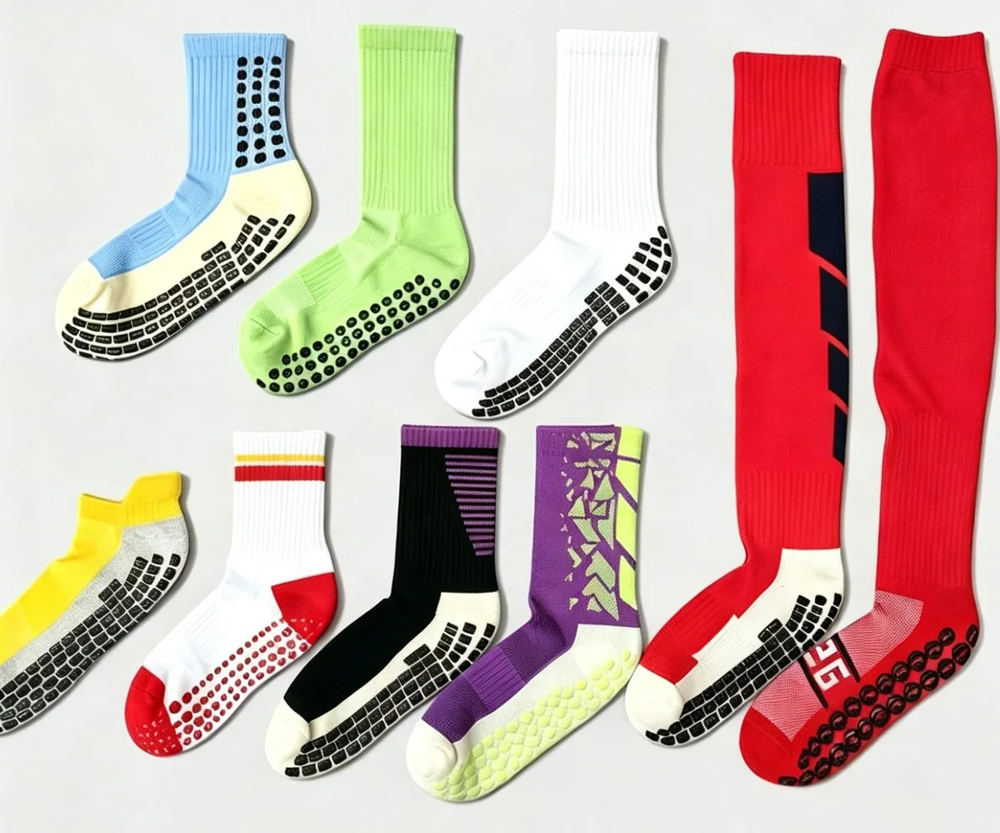

Products
Every sock here is two decisions before it is anything else: how far up the leg it goes, and how the artwork gets onto it. Yarn, gauge, size run and packing all follow from those two, which is why they come first.

Height first
A no-show and a thigh-high can carry the same artwork and still be two different products. The long one takes several times the yarn and holds the machine far longer, so the pair costs more — but the minimum is 100 pairs on every height, from no-show to thigh-high.
Reference heights, not a fixed range — each one measured flat, from the centre of the heel where it is knitted to the top of the cuff, and then knitted to the number on your brief. Send a quarter that finishes at 9 cm and that is the quarter we make.
One sock at each length, at one scale, no-show at the left. The thigh-high is measured from the floor rather than up from the ankle, so it sits outside this row.

Four ways to apply the design
Same floor, same minimum, same sample window. The artwork usually picks the method for you — the four pages below explain which one and why.

Colour is knitted into the fabric itself, so the pattern does not crack or lift in the wash. Up to 6 colours in a single row.
View jacquard →
A raised thread mark on the cuff or leg, up to 8 thread colours. The finish that makes a sock read as retail rather than giveaway.
View embroidery →
No colour limit, no cracked print. The only route for gradients, photographs and artwork with more than six colours.
View printing →
Silicone, PVC or flocked grip on the sole in any dot layout — the reason the sock exists for pilates, barre and indoor training.
View grip →By type
The same six heights, described from the buyer's side of the table.
Specification
Anything outside this table is possible — it needs a conversation and a sample.
| MOQ | 100 pairs per style per colour, on every height |
|---|---|
| Sampling | 3–5 days after artwork approval |
| Bulk lead time | 20 days for 1–500 pairs; rush available |
| Needle gauge | 144N / 168N / 200N |
| Yarn | Combed cotton, polyester, acrylic, nylon, spandex blends |
| Sizes | EU 35–50 adult and 16–35 kids, US 3–16 — or your own chart |
| Packing | Poly bag, header card, hang tag, retail box |
| Trade terms | EXW / FOB / CIF / DDP — quoted per order |
Questions buyers ask
Straight answers, no sales copy.
Yes, but each height is its own programme and its own minimum. A crew and a knee-high in the same colourway are two setups on the machine, so they are quoted as two lines and the minimum applies to each. Buyers who need several heights usually start with the one that sells best and add the second at reorder.
Per style and per colour. 100 pairs is a 100-pair run in one colourway, and a size run — say 25 pairs each of four sizes — sits inside that, not on top of it. Two colourways means two programmes and 200 pairs in total.
The artwork, mostly. Jacquard handles up to 6 colours in a row and any geometry that repeats; embroidery gives a raised mark of up to 8 thread colours and is best on a small badge or wordmark; sublimation print is the only route for gradients, photographs and more than six colours. Send the file and the method is obvious within a day.
No-show and ankle, because they use the least yarn and the least machine time for the same design. Cost climbs with height, and it climbs again with gauge and with the number of colourways in one order. We quote a band per order rather than a price per pair, because the same sock at 100 pairs and at 5,000 pairs is two different numbers.
Usually. Send a physical pair rather than a photo if you can — the yarn count, the gauge and the cuff depth are measurable on a real sock and guesswork on a picture. We will tell you what cannot be matched exactly, which is normally the dye lot and sometimes the yarn.
Two lines is enough to start: how high the sock goes and what has to appear on it. The reply is a mock-up date and a price band, not a questionnaire.